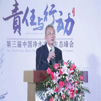
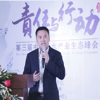

|  | 第三届净水峰会推动水行业健康发展日前,直饮水时代、奥维云网和国美电器联合举办了第三届中国净水产业生态峰会，峰会旨在推动水行业健康发展，让消费者放心选择净水产品，肯定优秀品牌对行业所做的贡献。知名企业立升净水此次荣获“饮水安全核心技术”大奖，这是该企业在2016年荣获的第七个重要奖项。同时，该峰会活动还根据国美全国销售数据、结合奥维云网大数据和直饮水时代渠道数据，评选出年度名优产品和销量明星产品。 从自来水处理、家庭净水、商务净水和污水处理各领域，立升开发出一套完整的水资源全循环膜法净水解决方案。在水源安全净化方面，超滤膜组件实现了从水源水到自来水厂水质净化；在家庭饮水安全净化领域，早在1998年立升即率先提出 “分散式终端分质供水系统”的概念，开发出一系列以超滤为核心的组合净水工艺，解决自来水管路输送过程中引起的二次污染问题，立升全屋中央净水器提供了所有水龙头的终端净水；在排放安全净化领域，立升浸没式超滤膜组件用于中水回用或排放，再回归到江河湖海的整个水循环过程，该技术已成功应用于油田采出水回用、城市垃圾渗滤液处理、小区污水处理，以及印染、屠宰、烟草等工业生产废水处理和回用过程，被国家知识产权局授予“节能减排推荐产品”称号。 |
|  |
水资源介绍